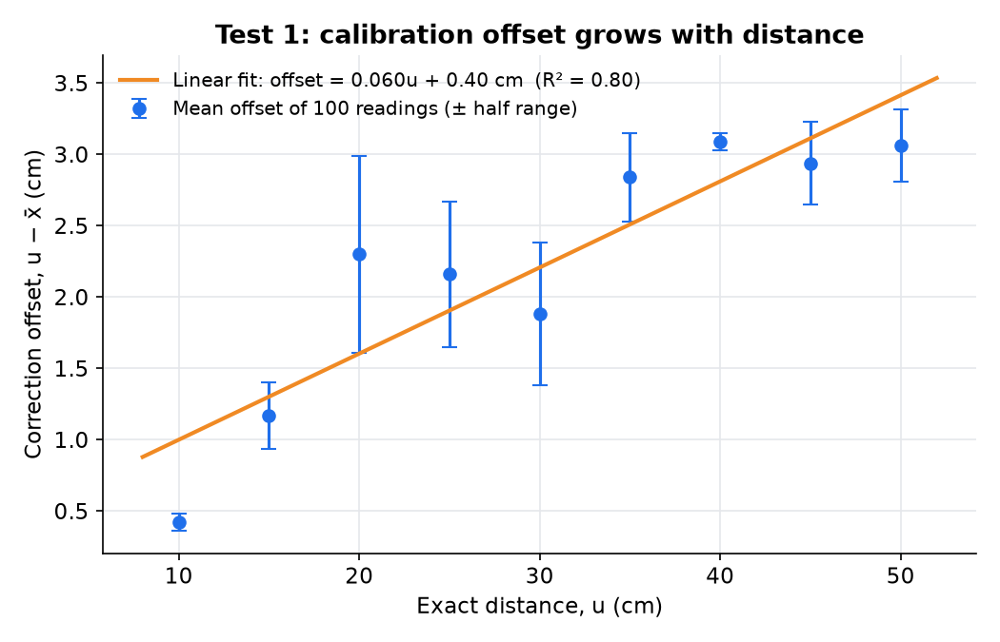
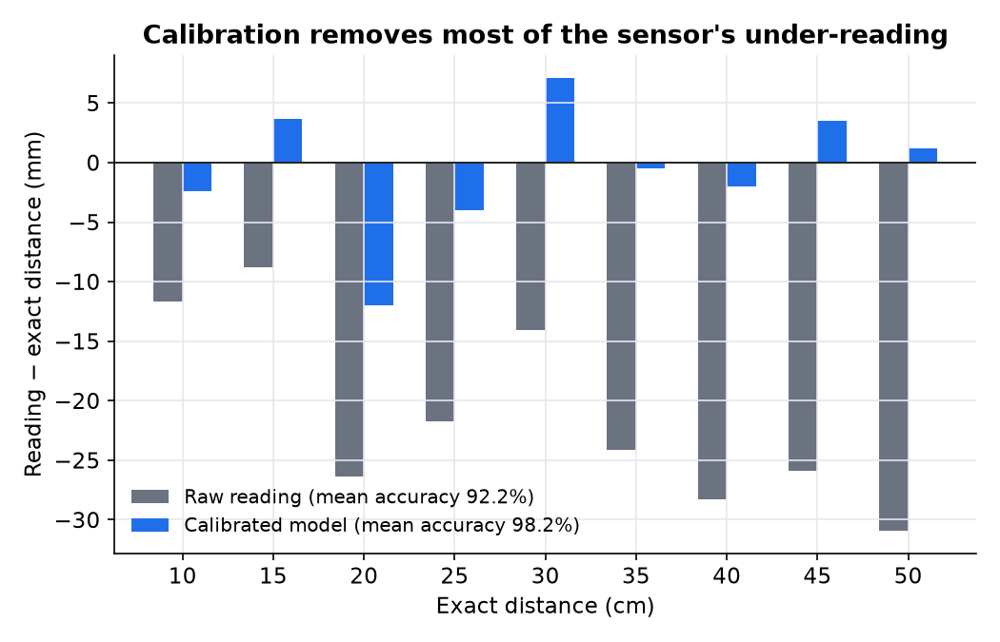
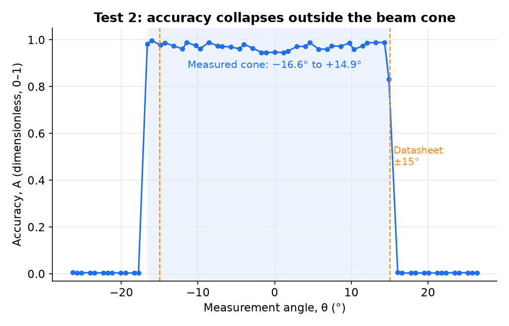
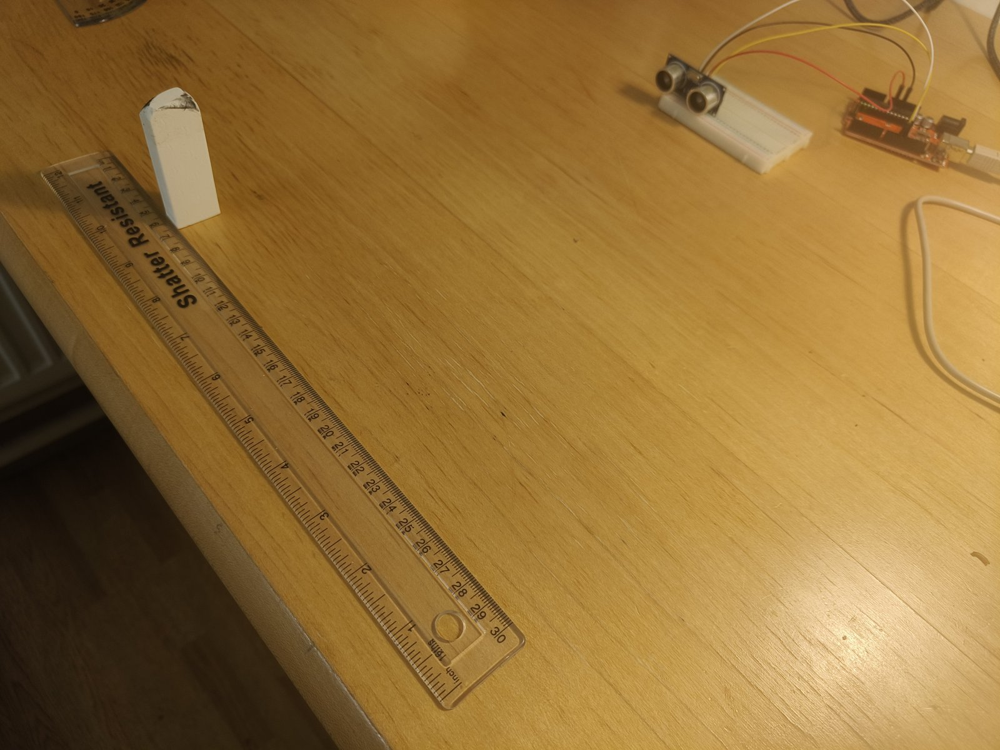
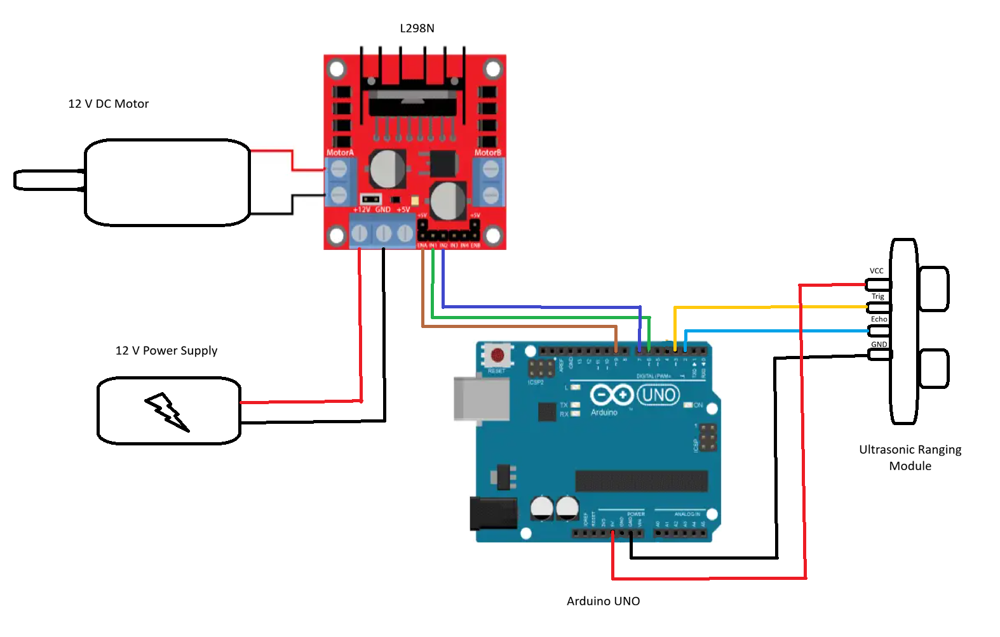

Coursework
Sensor Control Loops in MATLAB

Overview
A Mechatronics technical report testing whether a low-cost HC-SR04 ultrasonic ranging module could serve as a landing terrain proximity detection system for a slow drone. I read the sensor into MATLAB through an Arduino, calibrated it against a ruler from 10 to 50 cm, and mapped the real edges of its beam cone, then used the results to sketch a rotating sensor mount and motor-driver circuit for the landing system.
What I did
- Wired the sensor to an Arduino UNO-compatible board and wrote a MATLAB script that takes 100 readings at a time through the Arduino support package and averages them.
- Test 1 (calibration): logged 100 readings at each fixed distance from 10 to 50 cm in 5 cm steps and fitted a linear correction, u = x + (0.06x + 0.004) in metres, with R² = 0.80.
- Checked the model on fresh single readings: mean accuracy rose from 92.2% for the raw readings to 98.2% after correction.
- Test 2 (beam angle): moved a 1 cm wide target along a ruler 30 cm from the sensor in 0.5 cm steps and scored accuracy at each angle. The target was only detected between −16.6° and +14.9°, against ±15° in the datasheet.
- Found the cone was not symmetric about the centre of the sensor: its origin sits about 0.5 cm to the right, a systematic error that can now be corrected.
- Proposed a landing system that tilts the sensor at 15° and spins it with a 12 V DC motor through an L298N driver, widening coverage from 30° to 60°.
What I learned
A datasheet is a starting point, not a measurement: this sensor consistently under-read by up to about 3 cm, and its beam was offset and slightly wider on one side than specified. Simple calibration made a cheap sensor far more useful, but the fit only explained 80% of the variation and did not pass through every error bar, so a better model is still needed. I also learned to keep claims inside the tested range: 10 to 50 cm is far short of the few metres a real landing system needs, and I did not test unreflective or uneven surfaces or the sensor in flight.
Gallery




